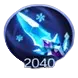

Luo Yi is one of the most fascinating and challenging mages in Mobile Legends: Bang Bang. While she appears balanced and relatively easy to pick up, truly mastering her potential requires a deep understanding of her abilities, unique combos, and optimal gameplay strategies.
This guide will walk you through everything you need to know about Luo Yi, including her skills, passive mechanics, builds, emblem setup, and gameplay tips to help you dominate the battlefield.
Luo Yi Mobile Legends Bang Bang with skin collector, a game developed by Moonton.
Unveiling Luo Yi: Hero Overview and Overall Tier List
Luo Yi’s passive, Duality, is the core mechanic that makes her so unique. She applies Yin and Yang sigils to her targets, causing a reaction when enemies marked by opposing sigils come close. This reaction not only pulls enemies together but also deals magic damage and immobilizes them for a second. Mastering the timing and placement of her skills is key to triggering this reaction effectively.
Luo Yi Passive Skill: Duality, Mobile Legends.
First Skill: Dispersion
Luo Yi’s first skill allows her to release energy in a specific direction, marking enemies with either a Yin or Yang sigil. The mark alternates with every cast, so you’ll need to strategize carefully when aiming. Hitting enemies already marked with an opposite sigil will trigger the Yin-Yang Reaction, dealing bonus damage and immobilizing them.
Aim for at least two enemies to maximize the reaction effect.
Avoid auto-tapping; manual aiming is essential to land hits on moving targets.
Prioritize leveling this skill as it is Luo Yi's primary source of damage.
Second Skill: Rotation
Luo Yi summons a rotating field of energy that deals magic damage and slows enemies by 60% for a short time. Like her first skill, this also alternates between Yin and Yang attributes. While it can trigger the Yin-Yang Reaction, it doesn't mark enemies, so precision and timing are critical.
Use this skill to crowd-control enemies and create opportunities for combos.
Position it strategically in choke points or around objectives to maximize its impact.
Pair it with your first skill for a guaranteed reaction.
Ultimate Skill: Diversion
Luo Yi’s ultimate is a game-changing ability that creates a teleportation circle, allowing her and her teammates to teleport to a chosen location on the map. This skill has incredible versatility for both offense and defense.
Launch surprise attacks by teleporting your team into the enemy’s backline.
Rotate quickly across the map to assist teammates or secure objectives.
Escape dangerous situations by teleporting to safety.
Best Builds for Luo Yi
Against Squishy Enemies
Enchanted Talisman
For mana regeneration and cooldown reduction.
Arcane Boots
Boosts magic penetration.
Clock of Destiny
Provides scaling magic power and durability.
Lightning Truncheon
Amplifies burst damage.
Holy Crystal
Enhances late-game magic power.
Divine Glaive
Great for cutting through magic defense.
Against Tanky Enemies
Glowing Wand
Adds damage-over-time to enemies with high HP.
Enchanted Talisman
Essential for cooldown management.

Ice Queen Wand
Slows enemies and enhances crowd control.
Genius Wand
Reduces magic defense.
Holy Crystal
Boosts damage output.
Blood Wings
Grants additional durability and magic power.
Recommended Emblems and Talents
The Custom Mage Emblem is ideal for Luo Yi. Here’s the setup:
First Talent: Inspire – Reduces cooldowns, letting you cast spells more frequently.
Second Talent: Wilderness Blessing – Improves mobility in the jungle and river areas, enhancing rotations.
Core Talent: Lethal Ignition – Amplifies your damage when hitting enemies with consecutive abilities.
Combos and Gameplay Strategy
Optimal Skill Combos
First Skill → Second Skill: Apply opposing marks and trigger the Yin-Yang Reaction.
Second Skill → First Skill: Use this if your second skill is already in position to slow enemies before applying a mark.
Ultimate → First/Second Skill: Teleport into a team fight, then immediately use your skills to disrupt and immobilize enemies.
Early Game Tips
Unlock and prioritize leveling your first skill.
Harass the enemy mid-laner by aiming for precise hits.
Focus on last-hitting minions to gain gold and experience quickly.
Rotate to the side lanes to assist teammates when opportunities arise.
Mid Game Strategy
Stick with your tank or fighter while roaming to minimize the risk of ambushes.
Assist your team in securing objectives like the Turtle.
Position yourself carefully during team fights, staying in the backline for maximum safety.
Late Game Gameplay
Always move with your team—never wander alone.
Use your ultimate strategically to teleport your team into advantageous positions.
Focus on keeping yourself alive, as you’re the primary damage dealer in most situations.
Why Luo Yi Stands Out
Luo Yi's balanced design and unique mechanics make her a standout mage in Mobile Legends: Bang Bang. While challenging to master, the rewards are well worth the effort. Her ability to disrupt enemies, deal high burst damage, and reposition her team gives her an edge in both solo and team-based strategies.
FAQs
How do you trigger the Yin-Yang Reaction effectively? Make sure to apply opposing sigils on at least two enemies close to each other and position your skills carefully.
What is the best item to start with for Luo Yi? Enchanted Talisman is a must-have early item for mana regen and cooldown reduction.
How do you counter heroes with dash abilities? Focus on anticipating their movement and aim your skills accordingly.
Can Luo Yi's ultimate teleport enemies? No, only Luo Yi and her allies can use her ultimate to teleport.
What is Luo Yi's biggest weakness? Luo Yi struggles against mobile heroes and requires precise skill aiming to be effective.
How should I position myself during team fights? Always stay in the backline and let your tank absorb the initial damage.
Conclusion
Mastering Luo Yi in Mobile Legends: Bang Bang is both challenging and rewarding. With a firm grasp of her skills, combos, and strategies, you can control the battlefield and lead your team to victory. Take the time to practice her mechanics, and you’ll soon be making game-changing plays with ease.
Did you like our Luo Yi guide? Is there something you didn't understand or would like to suggest changes to? We invite you to join our comment section on the Alexandre Games Blog page. Feel free to express your opinion, clarify your doubts, and share your suggestions. Click the button below to get started:


 Novaria Guide Mobile Legends
Novaria Guide Mobile Legends